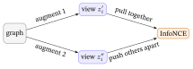
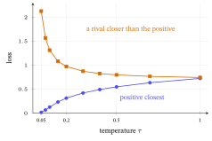
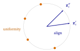
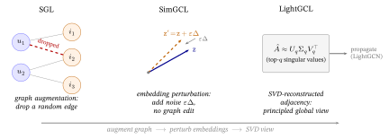
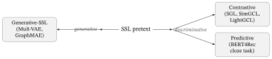

SSL & Contrastive Learning
1. Why self-supervised learning? The sparsity problem
A LightGCN is trained with the BPR loss on observed interactions only — pairs “(user \(u\) clicked item \(i\))”. Two structural problems follow:
- Sparsity. A typical user touches a tiny fraction of the catalog. The supervised signal is a thin scattering of 1s in a vast matrix of unknowns. Embeddings for rarely-seen users/items get almost no gradient.
- Popularity bias / long tail. A few blockbusters dominate the interactions, so their embeddings are well-trained while the long tail of niche items is starved. The model over-recommends popular items and collapses the tail into a blurry region of space. (From Graphs to LightGCN §13 works this out numerically — the blockbuster drifting to the population centroid, and the niche item getting a single gradient.)
Self-supervised learning (SSL) fixes this by inventing an auxiliary task that needs no labels — it manufactures its own supervision from the data’s own structure. You train on the main task (BPR) and the auxiliary SSL task jointly:
\[ \mathcal{L} = \underbrace{\mathcal{L}_{\text{BPR}}}_{\text{main: rank clicks}} + \;\lambda\, \underbrace{\mathcal{L}_{\text{ssl}}}_{\text{auxiliary: free structure}}. \]
The SSL term acts as a regularizer that shapes the embedding geometry — spreading embeddings out, sharpening the tail, and making the model robust to noise. The two dominant SSL flavors are contrastive (§3–§5) and generative (§6).
2. The variant landscape branching out of LightGCN
After LightGCN became the default backbone, research branched in three directions.
2A. “Simplify even further”
- UltraGCN (CIKM 2021) — infinite LightGCN layers converge to a fixed point, so instead of iterating message passing, UltraGCN directly approximates that limit with a constraint loss (incl. item–item relations). No propagation → fast, often stronger.
- Spectral / graph-filter view (GF-CF, SVD-GCN, and later PolyCF / ChebyCF / PSGE) — reinterpret LightGCN propagation as a low-pass graph filter on the interaction graph. Once propagation = filtering, you can replace the trained GNN with a closed-form SVD or polynomial filter, sometimes with no training. (This spectral lens reappears in LightGCL, §5.) (These filtering methods are developed in depth in The Spectral / Graph-Filter View; here they appear only as the SSL-adjacent branch.)
2B. “Fix what plain averaging loses”
- IMP-GCN / LayerGCN — combat over-smoothing (see the backbone note §12) via interest-aware subgraphs or residual layer design.
- DGCF (Disentangled GCN, SIGIR 2020) — a click can come from multiple intents (genre, mood, actor); DGCF splits the embedding into intent chunks and propagates per intent.
- HGCF (hyperbolic) / HCCF (hypergraph, SIGIR 2022) — richer geometry (hierarchy / higher-order group structure) than flat pairwise edges.
2C. “Add self-supervision” — the branch this chapter is about
Bolt a contrastive auxiliary task onto a LightGCN backbone:
\[ \text{LightGCN} \;\to\; \text{SGL} \;\to\; \text{SimGCL} \;\to\; \text{LightGCL} \]
That line (§3–§5) is the heart of modern graph collaborative filtering.
3. Graph Contrastive Learning (GCL) — fundamentals
3.1 The core rule
Pull two “views” of the same node together; push different nodes apart.
Make two augmented versions (views) of each node’s embedding. Optimize so the same node’s two views agree (a positive pair), while different nodes disagree (negatives).

3.2 The InfoNCE loss
\[ \mathcal{L}_{\text{cl}} = \sum_{i} -\log \frac{\exp\!\big(\operatorname{sim}(z_i', z_i'')/\tau\big)} {\sum_{j}\exp\!\big(\operatorname{sim}(z_i', z_j'')/\tau\big)} \]
(Denominator convention: the sum over \(j\) here runs over all nodes including \(i\) itself, so the positive pair sits in both the numerator and the denominator. Some implementations instead sum only over \(j\neq i\), subtracting that one term from the denominator — a slight numerical difference but the same gradient direction.)
The pieces, in words (this chapter explains meaning, not derivations):
- \(z_i', z_i''\) — node \(i\)’s two views (its two augmented embeddings, §3.1).
- \(\operatorname{sim}\) — cosine similarity: how aligned two vectors are, in \([-1,1]\) (\(+1\) = same direction, \(0\) = unrelated). So the loss talks about directions, not magnitudes.
- \(\tau\) — temperature: divides every similarity before the softmax. Small \(\tau\) = sharper contrast (the loss focuses hard on the closest negatives); a sensitive knob.
- The numerator rewards the positive pair \((z_i',z_i'')\) for agreeing; the denominator sums over all nodes \(j\), so it pushes \(i\) away from every other node (the negatives).
Worked example — one node, one positive, two negatives. Take node \(i\)’s anchor view \(z_i'=(1,0)\) and its positive (second view) \(z_i''=(0.8,\,0.6)\), with two other nodes as negatives, \(z_a''=(0.6,\,0.8)\) and \(z_b''=(-0.6,\,0.8)\) — all unit vectors, so cosine similarity is just the dot product. With temperature \(\tau=0.2\):
| pair | \(\operatorname{sim}\) | \(\operatorname{sim}/\tau\) | \(\exp(\operatorname{sim}/\tau)\) |
|---|---|---|---|
| positive \(z_i''\) | \(0.8\) | \(4.0\) | \(54.60\) |
| negative \(z_a''\) | \(0.6\) | \(3.0\) | \(20.09\) |
| negative \(z_b''\) | \(-0.6\) | \(-3.0\) | \(0.05\) |
The denominator sums all three: \(54.60+20.09+0.05=74.74\). The positive’s softmax share is \(54.60/74.74=0.731\), so node \(i\)’s contrastive loss is \[\mathcal{L}_{\text{cl},i}=-\log(0.731)=0.31.\] Read it as a tug-of-war: the positive already takes \(73\%\) of the probability, so the loss is small but not zero — the negative at similarity \(0.6\) is close enough to steal some share. Alignment raises the positive’s similarity (its share \(\to 100\%\), loss \(\to 0\)); uniformity lowers the negatives’ (push the \(0.6\) neighbour away) — either move shrinks the loss. (Every number here was checked in code.)
Newbie link. This is the InfoNCE introduced from zero in Losses & Regularizers §2.4, and the same shape as the sampled-softmax ranking loss (Losses & Regularizers §10) — a positive contrasted against many negatives, scaled by \(\tau\), with softmax (Probability primer §3) turning scores into a distribution. The only difference from sampled softmax is what counts as the positive: there it’s an item the user clicked; here it’s a second view of the same node. So InfoNCE is not new machinery — just a new choice of “positive.”
3.3 What InfoNCE actually optimizes: alignment + uniformity
Wang & Isola (ICML 2020) showed contrastive losses optimize two things, both helpful for recommendation:
- Alignment — positive pairs (two views of the same node) end up close.
- Uniformity — embeddings spread evenly over the hypersphere → directly fights popularity bias and representation collapse (the §1 long-tail problem; worked numerically in From Graphs to LightGCN §13).
The negative-free alternative (DirectAU). InfoNCE earns alignment and uniformity indirectly, through the positive-vs-negatives softmax. DirectAU (Wang et al., KDD 2022) optimizes the two directly, with no negatives at all: an alignment term \(\mathcal{L}_{\text{align}}=\lVert z_i'-z_i''\rVert^2\) that pulls a positive pair together, and a uniformity term — the log-mean Gaussian potential \(e^{-2\lVert z_i-z_j\rVert^2}\) over pairs — that spreads everything out. On the §3.2 vectors the positive pair \(z_i'=(1,0),\,z_i''=(0.8,0.6)\) gives \(\mathcal{L}_{\text{align}}=\lVert(0.2,-0.6)\rVert^2=0.40\) — small, because the two views already point almost the same way, and driving it to \(0\) does the same job as the InfoNCE numerator, with no denominator to sum. (DirectAU is covered as a loss in Losses & Regularizers §11 — the “what GCL is really for” baseline.)

Two failure modes (and how the loss names them). Both are visible as a loss value on the §3.2 example.
- Representation collapse — the encoder maps every node to the same vector, so all similarities \(=1\), positives and negatives alike. Then every node’s softmax share is just \(1/N\) (with \(N\) nodes in the batch), and the loss pins at its worst value \(\log N\) — e.g. \(\log 256\approx 5.55\) for a 256-node batch. This is exactly what the uniformity term punishes: a collapsed space has zero spread, so it pays the maximum penalty and gets pushed apart. (Generative SSL has its mirror-image failure — a trivial identity map; §6.)
- \(\tau\) too small — shrinking \(\tau\) sharpens the softmax onto the single closest pair. That is a feature only if the positive is closest. When a hard negative sits closer than the positive — say positive at \(0.6\), a negative at \(0.7\) — the loss on that node rises from \(0.97\) at \(\tau=0.2\) to \(2.13\) at \(\tau=0.05\): one pair now dominates the whole gradient, and training gets brittle. So \(\tau\) is a sensitivity dial, not a “smaller is always better” one. (Both numbers code-verified, using the positive’s similarity 0.6 from §3.2 and a fresh hard-negative at similarity 0.7.)
3.4 The joint objective
\[ \mathcal{L} = \mathcal{L}_{\text{BPR}} + \lambda\,\mathcal{L}_{\text{cl}}. \]
(This is the generic SSL objective of §1, \(\mathcal{L}_{\text{BPR}}+\lambda\mathcal{L}_{\text{ssl}}\), with the contrastive choice \(\mathcal{L}_{\text{ssl}}=\mathcal{L}_{\text{cl}}\).) BPR does the ranking; the contrastive term regularizes geometry. \(\lambda\) (how much SSL) and \(\tau\) (contrast sharpness) are the two sensitive hyperparameters.
Where it plugs into the LightGCN loop — and on which embeddings. A common beginner trap is to contrast the raw lookup embeddings \(E^{(0)}\). You do not. The contrastive loss runs on the layer-combined final embeddings — the \(e_u=\sum_{k}\alpha_k e_u^{(k)}\) that LightGCN already produces (From Graphs to LightGCN §12, §14) — the same vectors BPR scores with. One training step is:
for each mini-batch (u, i+, j-): # one optimizer step
E1 = propagate(view 1) # e.g. dropped-edge / noised graph
E2 = propagate(view 2) # e.g. SVD graph (LightGCL) or 2nd noise draw
# both give LAYER-COMBINED final embeddings, one per node
L_bpr = bpr(E_main, u, i+, j-) # rank: score = <e_u, e_i>
L_cl = infonce(E1, E2, tau) # batch nodes as in-batch negatives
loss = L_bpr + lambda * L_cl # one scalar
loss.backward(); opt.step() # both losses share the same encoderThe two views are two forward passes through one shared encoder (same weights), so the contrastive gradient flows back into the same embedding table that BPR is training — that is how “shaping the geometry” and “ranking clicks” become one update.

Typical settings (a starting point, not gospel). For the noise/edge-drop methods, \(\tau\approx 0.1\)–\(0.2\) (smaller = harder focus on the closest negatives); contrastive weight \(\lambda\approx 0.05\)–\(1.0\); SimGCL noise magnitude \(\varepsilon\approx 0.1\); SGL edge/node-drop ratio \(\approx 0.1\). LightGCL (§5) is the exception that proves “defaults are method-specific”: its paper fixes SVD rank \(q=5\), searches a much larger \(\tau\in\{0.3,0.5,1,3,10\}\) and a much smaller contrastive weight \(\lambda_1\in\{10^{-7},\,10^{-6},\,10^{-5}\}\) — so never port one method’s \(\tau\)/\(\lambda\) to another blindly. And in practice the denominator’s “all nodes \(j\)” means the other nodes in the current mini-batch (in-batch negatives) — summing over the whole catalogue every step would be far too costly. Two caveats with in-batch negatives: a larger batch brings more (and harder) negatives, which shifts the best \(\tau\)/\(\lambda\); and a genuine positive pair that happens to share a batch becomes a false negative (pushed apart) — rare, but likelier for very popular items. Common remedies: a memory bank / momentum queue (more negatives without a huge batch) and debiased / hard-negative sampling to curb false negatives.
4. The view-construction question (this is what separates GCL methods)
Every GCL method differs in one design choice: how do you make the two views?
| Method | Year / venue | How it builds the two views | Key insight / cost |
|---|---|---|---|
| SGL | SIGIR 2021 | Augment the graph structure: random node-drop / edge-drop / random-walk, then propagate each corrupted graph | First GCL-for-CF. But edge-dropping is expensive (re-propagate each epoch) and can destroy useful structure. |
| SimGCL | SIGIR 2022 | No graph augmentation. Add small uniform random noise to the embeddings to make two views | Pivotal finding: structure augmentation barely matters — the uniformity the loss induces is what helps. Simpler, faster, stronger. |
| XSimGCL | TKDE 2023 | Fold the contrastive signal into propagation itself (cross-layer noise) | Even cheaper; one forward pass yields the contrastive views. |
| NCL | WWW 2022 | Positives = neighbors: structural neighbors + semantic cluster prototypes (EM) | Contrast a node with its neighborhood/prototype rather than a noisy copy. |
| HCCF | SIGIR 2022 | Contrast a local (graph) view against a global hypergraph view | Captures higher-order, group-level collaborative signal. |
| LightGCL | ICLR 2023 | Second view from truncated SVD of the adjacency (see §5) | Make the augmentation principled & global instead of random. |
The two pivotal mechanics, made concrete. The table’s first two rows are usually left as names; here is what each actually does.
SGL’s edge-drop. Take a tiny user–item graph with interaction matrix \(R=\left[\begin{smallmatrix}1&1&0\\0&1&1\end{smallmatrix}\right]\) (user A touched items 1 and 2, user B touched items 2 and 3 — four edges). “Drop 10% of edges” means delete a random subset; dropping the A–2 edge leaves the corrupted \(\tilde R=\left[\begin{smallmatrix}1&0&0\\0&1&1\end{smallmatrix}\right]\). Run ordinary LightGCN propagation on \(\tilde R\) to get one view; a second independent drop gives the other; InfoNCE then pulls each node’s two views together. The cost is real: every epoch re-drops and re-propagates the whole graph (two extra passes), and an unlucky drop can sever a node’s only edge.
SimGCL’s noise. SimGCL skips graph surgery and perturbs the embeddings directly. For a node embedding \(\mathbf z\), a view is \(\mathbf z' = \mathbf z + \varepsilon\,\Delta\), where \(\Delta\) is a random unit vector (drawn per node, kept in \(\mathbf z\)’s orthant — an orthant is the high-dimensional analog of a quadrant: a region where the signs of all coordinates are fixed — so the noise nudges rather than flips signs) and \(\varepsilon\approx0.1\) sets the radius. Concretely, for \(\mathbf z=[0.6,0.8]\) and a draw \(\Delta=[0.6,0.8]\): \(\mathbf z'=[0.6,0.8]+0.1\,[0.6,0.8]=[0.66,0.88]\) — the perturbation has length \(\lVert\varepsilon\Delta\rVert=0.1\). Two independent draws give the two views; no adjacency is touched and nothing is re-propagated, which is why SimGCL is simpler, faster, and stronger — and the finding that embedding noise works as well as elaborate graph augmentation is the chapter’s pivot.
The trajectory in one line: augment the graph (SGL) → realize that’s unnecessary, perturb embeddings (SimGCL) → make the perturbation principled, not random (LightGCL).

Should you even add SSL — and which one? SSL is not free, and it does not always help.
- When it pays: sparse interaction data, a heavy long tail, many cold or niche items — exactly the §1 failure modes. The contrastive term’s uniformity spreads the starved tail out instead of letting it collapse.
- When it barely moves the needle: dense data with a strong collaborative signal, or a model already rich in side-features — there is little collapsed geometry left to fix.
- The cost, per method: SGL is the priciest — two extra full propagations every epoch (it re-drops and re-propagates the graph); SimGCL / XSimGCL are nearly free (no graph edit, just a cheap noised forward pass); LightGCL pays a one-time SVD, then is cheap.
Default: reach for SimGCL first (\(\varepsilon\approx0.1\), small \(\lambda\)) — most of the gain for least of the cost — and escalate only if it is not enough.
5. LightGCL in depth (ICLR 2023)
Thesis. Random / noise augmentation (SGL, SimGCL) is unguided — it can drop important edges or inject meaningless noise. Can the contrastive view instead be structurally meaningful?
Answer: build the second view with truncated SVD of the interaction graph.
- Take the normalized adjacency \(\tilde{A}\) (the \(1/\sqrt{\deg}\)-normalized interaction matrix from the backbone note, §7/§14).
- Compute its truncated SVD (top-\(q\) singular values): \[\hat{A} \approx U_q\,\Sigma_q\,V_q^\top.\] Reading the pieces: \(U_q\) and \(V_q\) hold the \(q\) strongest user-side and item-side patterns (think “latent tastes / genres”), \(\Sigma_q\) holds how strong each pattern is, and \(V_q^\top\) is just \(V_q\) written as rows. The sign is \(\approx\), not \(=\), on purpose: throwing away the weak singular values is the denoising — what is left is the dominant, global collaborative signal. (SVD and the “low-rank = ideal low-pass” idea are unpacked in The Spectral / Graph-Filter View.)
- Propagate on the SVD-reconstructed graph to get one view; propagate normally (LightGCN) for the other; contrast them with InfoNCE. The contrast is two-view, not three: LightGCL contrasts the SVD view directly against the main LightGCN embeddings (unlike SGL/SimGCL, which build two extra views and leave the main one out of the loss).
The factored trick — why it is actually lightweight. You never build the dense reconstructed matrix \(\hat{A}\) (it is \(\text{users}\times\text{items}\) — for ML-20M, \(\sim\!138\text{k}\times27\text{k} \approx 3.7\times10^9\) entries). Instead, propagating one layer is just \[ G^{(v)} = \tilde{A}\,E \;\approx\; U_q\big(\Sigma_q\,(V_q^\top E)\big), \] and you evaluate it right-to-left: \(V_q^\top E\) first (a \(q\times d\) matrix), then scale by \(\Sigma_q\), then multiply by \(U_q\) — every intermediate is tiny because \(q\) is small (the paper uses \(q=5\)). Pre-caching \(U_q\Sigma_q\) and \(V_q\Sigma_q\) once, a layer costs \(O\big((\text{users}+\text{items})\,q\,d\big)\) instead of the dense \(O(\text{users}\cdot\text{items}\cdot d)\) — for \(10^5\) users/items, \(q=5\), \(d=32\) that is \(\sim\!3.2\times10^7\) vs \(\sim\!3.2\times10^{11}\) multiply-adds, a \(10{,}000\times\) saving (and the SVD itself is run once, with a randomized SVD in practice). (Cost arithmetic code-verified.)
Why it is clever:
- Global & principled, not random. A few hops of LightGCN propagation only reach local structure (backbone note: 2–4 layers before over-smoothing). The SVD view injects information about the entire user–item structure into every node in one shot.
- Lightweight. A low-rank SVD is cheap and computed once — no per-epoch edge-dropping (unlike SGL).
- Connects to the spectral view (§2A). Low-rank SVD = low-pass filtering = keep the smooth collaborative signal, drop noisy high-frequency detail.
So: LightGCL = LightGCN backbone + one global SVD-based contrastive view. It is the “make the augmentation meaningful” endpoint of the SGL → SimGCL → LightGCL line.
6. Four paradigms: discriminative, generative, contrastive, predictive
§3–§5 were all contrastive. Before adding the generative family (needed for RLMRec, §7), it pays to untangle four words that are constantly muddled — because they live on two different axes, not in one flat list. Getting this straight is what makes “contrastive vs. generative” below precise instead of fuzzy.
6.1 Axis 1 — discriminative vs. generative (what the model learns)
The classical split (Ng & Jordan, 2002), about which probability a model represents.
- Discriminative — models the conditional \(p(y\mid x)\): given an input, output a label/score. It learns only the boundary between answers and cannot create new data. Examples: logistic regression, SVMs, and — our case — LightGCN + BPR (it discriminates “clicked” from “not-clicked,” i.e. ranks).
- Generative — models the data itself, \(p(x)\) (or the joint \(p(x,y)\)): how the data is produced. It can sample new data. Examples: naïve Bayes, VAEs (Mult-VAE), GANs, diffusion, autoregressive LLMs.
One picture. Cats vs. dogs. A discriminative model learns the single line that separates them. A generative model learns what a cat looks like and what a dog looks like, then classifies by asking “which is more likely to have produced this image?” — and, as a bonus, can draw a new cat. (This is Losses & Regularizers §6 restated: a loss is a \(-\log\)-likelihood, so a generative model is literally a likelihood model of the data \(x\).)
6.2 Axis 2 — the SSL pretext taxonomy (how you invent the free task)
SSL (§1) needs a pretext task: a fake, label-free objective built from the data’s own structure. Pretext tasks come in three flavors:
- Contrastive — “are these two views the same instance or not?” Pull a node’s two views together, push other nodes apart (InfoNCE). Recsys: SGL, SimGCL, LightGCL, RLMRec-Con.
- Predictive — “predict a property derived from the data itself.” There is one ground-truth answer computed from the data; no negatives. Generic: predict an image’s rotation angle. Recsys: predict a masked item in a user’s sequence (BERT4Rec’s cloze task), or a masked node attribute / cluster id. Concretely in BERT4Rec: one item is randomly masked from a user’s interaction sequence; the model is trained to predict that item’s ID from the remaining context, with a cross-entropy loss over the full item vocabulary. Because there is exactly one correct item, no negatives are needed — the “negative” structure is already baked into the vocabulary-sized denominator of the softmax.
- Generative — “reconstruct the masked/corrupted input.” Rebuild the whole signal, not a small label. Recsys: Mult-VAE (rebuild the click vector), GraphMAE (mask & rebuild node features), RLMRec-Gen.
Sidebar — Mult-VAE in one paragraph. Mult-VAE encodes a user’s full click vector (a binary bag-of-items) into a latent code \(z\) through a variational encoder \(q(z\mid r)\), then a decoder \(p_\theta(r\mid z)\) reconstructs the click vector from \(z\). The training loss combines two terms: \(\mathcal{L} = -\mathbb{E}[\log p_\theta(r\mid z)] + \mathrm{KL}(q(z\mid r)\,\|\,p(z))\) — the first rewards faithful reconstruction via multinomial log-likelihood, the second pulls the latent distribution toward a prior (typically \(\mathcal{N}(0,I)\)). Because the latent code \(z\) must carry enough information to rebuild the entire click signal, the model is forced to learn a compact, meaningful summary of the user’s taste — that pressure is why it learns useful structure, and why it appears here as the representative generative-SSL baseline in E8(c).
6.3 How the two axes fit together (the key clarification)
The pretext flavors are not a separate list — each inherits a mechanism from Axis 1:
| Pretext flavor | What it predicts | Needs negatives? | Underlying mechanism (Axis 1) |
|---|---|---|---|
| Contrastive | another instance / view (relational) | yes | discriminative |
| Predictive | a derived label / value (absolute) | no | discriminative |
| Generative | the input itself | no | generative |

contrastive'' does not meangenerative.’’ (Arrows in the caption use \(\to\) = math mode.)
So contrastive and predictive are both discriminative techniques (a head that classifies/scores, trained with a cross-entropy-style loss); generative SSL is the generative technique (a decoder, trained with a reconstruction loss).
Contrastive vs. predictive — the subtle pair — differ only in their target: contrastive compares instance against instance and needs negatives (any positive view works; there is no single “correct” vector), while predictive has one correct answer derived from the data and needs no negatives. (Some surveys fold predictive into contrastive or generative; the recsys SSL survey of Yu et al., 2023, keeps contrastive / generative / predictive as distinct families, plus “hybrid.”)
6.4 In recommendation, the live contest is contrastive vs. generative
Predictive pretext tasks do appear in recsys (sequence masking), but the two families that dominate graph collaborative filtering — and that RLMRec ships as its two variants (§7) — are contrastive and generative:
| Contrastive | Generative | |
|---|---|---|
| Core question | “Are these two views the same or different?” | “Can I reconstruct the signal?” |
| Mechanism | pull positive pairs together, push negatives apart | mask or corrupt input, then regenerate it |
| Needs negatives? | yes (the InfoNCE denominator) | no |
| Typical loss | InfoNCE / alignment + uniformity | reconstruction (MSE / cross-entropy) |
| Graph examples | SGL, SimGCL, LightGCL, NCL, HCCF | GraphMAE (KDD 2022 — mask node features, reconstruct), masked-edge prediction |
| Main risk | sensitive to \(\tau\), \(\lambda\), choice of negatives/augmentation | can learn a trivial identity map if masking/corruption is too weak |
| Intuition | shapes the geometry of the space (uniformity) | forces embeddings to carry enough information to rebuild the signal |
Rule of thumb. Contrastive = “organize the space” (geometry / uniformity). Generative = “make the code informative enough to rebuild the signal.” Predictive sits between them (a cheap discriminative proxy). They are complementary — many recent systems offer more than one.
7. RLMRec — using both families, with the LLM as the “second view”
This is the direct bridge to LLM-augmented CF. (RLMRec: Representation Learning with Large Language Models for Recommendation, WWW 2024, arXiv 2310.15950, HKUDS.) The broader LLM × RecSys landscape this sits in — the four roles and their trade-offs — is surveyed in LLM × RecSys.
Setup. RLMRec keeps a collaborative backbone (e.g. LightGCN) producing ID embeddings, and uses an LLM to write text profiles of users and items, encoded into semantic embeddings. It then aligns the collaborative space with the semantic space — framed as mutual-information maximization between the two views. The LLM profile is, in effect, the “second view” that §3–§5 manufactured artificially — except now it carries real-world semantics instead of noise or SVD structure.
InfoNCE is a lower bound on the mutual information between the two views (van den Oord et al., 2018), so pulling a positive pair together pushes that MI up.
It ships two variants, one per SSL family:
RLMRec-Con (contrastive). Treat (user’s GNN embedding, that user’s LLM semantic embedding) as a positive pair, other users as negatives, and apply an InfoNCE alignment loss. This pulls the collaborative representation toward the semantic one — exactly the §3 machinery, but the positive’s “other view” is the LLM profile.
RLMRec-Gen (generative). Make the GNN embedding predict / reconstruct the LLM semantic embedding (a reconstruction objective, no negatives) — the §6 generative recipe.
Why this whole note matters for the paper. The chain is one coherent story:
\[ \underbrace{\text{LightGCN}}_{\text{feature-less ID embeddings}} \to \underbrace{\text{SSL auxiliary task}}_{\text{§1 fixes sparsity / tail}} \to \underbrace{\text{LLM = the second view}}_{\text{real semantics, not noise}} \to \underbrace{\text{contrastive vs. generative}}_{\text{how to fuse them}} \]
LightGCN’s defining property — pure ID embeddings with no semantic features (see backbone note §4 and §14) — is precisely the gap the LLM fills. If the backbone already consumed rich features, the LLM signal would add far less.
Empirically (verified): both RLMRec-Con and RLMRec-Gen consistently beat the LightGCN backbone (and stay ahead even under injected profile noise), with the largest gains on sparse / cold items — the long tail of §1. On the standard LightGCN / Amazon-book setting the lift is about +5.9% Recall@10 and +5.5% NDCG@20 (RLMRec paper, Table 1, Best Improvement row), and it holds across six backbones (GCCF, LightGCN, SGL, SimGCL, DCCF, AutoCF) and three datasets (Amazon-book, Yelp, Steam) — the semantic view helps even on top of an SSL backbone like SimGCL, not just a bare one. Con often edges Gen, but it is dataset-dependent — making contrastive-vs-generative an interesting ablation axis for LLM-augmented CF itself. (This chapter is the single owner of these per-cutoff numbers; LLM × RecSys §3 defers here.)
8. Recent developments (2024–2026) — verified 2026-06-02
Confidence flag: the items below were surfaced/confirmed by web search on 2026-06-02. Treat exact venues/years as cited; verify before putting in a paper’s references.
- Surveys to anchor a related-work section.
- A Comprehensive Survey of Self-Supervised Learning for Recommendation — ACM CSUR (HKUDS; companion repo Awesome-SSLRec-Papers). The canonical SSL-for-RecSys map.
- Contrastive Self-supervised Learning in Recommender Systems: A Survey — ACM TOIS.
- Graph contrastive learning view construction methods in recommender systems: a survey — Frontiers of Computer Science, 2025 (organized exactly by the §4 “how do you build the view” axis).
- LightGCN is being re-examined, not retired.
- Revisiting LightGCN: Unexpected Inflexibility, Inconsistency, and a Remedy — ACM TORS (2024/25). Argues LightGCN’s “remove everything” can be too rigid and proposes a remedy — a useful counter-citation to the backbone note’s §14 simplification narrative.
- FourierKAN-GCF (arXiv 2406.01034, 2024) — replaces the (removed) feature transform with a Fourier-KAN layer, i.e. a measured pushback on “transformation is always harmful.”
- The spectral / graph-filter branch is very active (often training-free).
- Hierarchical Graph Signal Processing for CF — WWW 2024.
- PolyCF (ACM TOIS) and ChebyCF — optimal/Chebyshev polynomial graph filters.
- PSGE — pure spectral embeddings, SOTA accuracy at lower runtime than gradient GCNs.
- GSPRec (arXiv 2505.11552, 2025) — temporal-aware spectral filtering. These reinforce §2A/§5: propagation = filtering, and filtering can be closed-form.
- LLM-for-RecSys is now its own subfield. Multiple 2024–2025 surveys (e.g. Towards Next-Generation LLM-based Recommender Systems, arXiv 2410.19744; reviews at 2507.21117, 2402.18590). RLMRec (WWW 2024) is a representative representation- alignment approach within it — distinct from generative/LLM-as-ranker lines.
9. Exercises
Work these by hand — the numbers are kept tiny on purpose and reuse the chapter’s own worked example (§3.2’s similarities \(0.8/0.6/-0.6\), the temperature \(\tau\), the collapse \(\log N\)). Full worked solutions are in the Solutions appendix at the back of the book.
(compute) Re-run §3.2’s worked InfoNCE with a milder temperature \(\tau=0.4\) (the chapter used \(\tau=0.2\)). Keep the same one positive and two negatives — similarities \(\operatorname{sim}=0.8,\ 0.6,\ -0.6\). Compute \(\exp(\operatorname{sim}/\tau)\) for each, sum them for the denominator, take the positive’s softmax share, and report the node’s loss \(\mathcal{L}_{\text{cl},i}=-\log(\text{share})\). Is the loss larger or smaller than the chapter’s \(0.31\) at \(\tau=0.2\), and why does a milder \(\tau\) move it that way?
(compute) Representation collapse maps every node to the same vector, so all similarities equal \(1\) and each node’s softmax share is just \(1/N\) for a batch of \(N\) nodes (§3.3). Show that the loss then equals \(\log N\), and evaluate it for a tiny batch of \(N=4\). Confirm your \(N=4\) number is far below the chapter’s \(\log 256\approx5.55\), and say in one line which term of the loss — alignment or uniformity — is the one that punishes collapse.
(compute) The §3.3 box warns that a too-small \(\tau\) is brittle when a hard negative sits closer than the positive. Take a positive at similarity \(0.6\) and a single hard negative at \(0.7\) (a two-term softmax) and compute the node’s loss at the in-between \(\tau=0.1\). The chapter gives the endpoints \(\approx0.97\) at \(\tau=0.2\) and \(2.13\) at \(\tau=0.05\); check your \(\tau=0.1\) value lands between them, and state what “\(\tau\) is a sensitivity dial” means here.
(concept) In one or two sentences, explain the two-views recipe (§3.1): what a “view” of a node is, why GCL needs two of them per node, and what makes a pair of views a positive pair versus a negative pair. Name two different ways §4–§5 actually build the second view.
(compute) Alignment is the half of InfoNCE that pulls a positive pair together. Starting from §3.2 (positive similarity \(0.8\), negatives \(0.6\) and \(-0.6\), \(\tau=0.2\), loss \(0.31\)), suppose alignment drives the positive’s similarity up to a perfect \(1.0\) while the two negatives stay put. Recompute the positive’s softmax share and the loss, and confirm the loss drops (toward \(0\)) — the numerical signature of better alignment.
(concept) A beginner bolts the contrastive loss onto the raw lookup embeddings \(E^{(0)}\). Per §3.4, why is that wrong — on which embeddings does \(\mathcal{L}_{\text{cl}}\) actually run, and how does it end up regularizing the very same vectors that BPR ranks? Sketch where \(\mathcal{L}_{\text{cl}}\) enters the one-step LightGCN training loop (the two views, the shared encoder, the summed loss).
(compute) §5’s factored SVD propagation avoids ever forming the dense reconstructed \(\hat{A}\). For a toy setting with \(\text{users}=\text{items}=1000\), SVD rank \(q=5\), and embedding dimension \(d=10\), compute the multiply-add cost of the dense layer \(O(\text{users}\cdot\text{items}\cdot d)\) versus the factored layer \(O((\text{users}+\text{items})\,q\,d)\), and report their ratio. (The chapter’s larger \(10^5\)-node setting gives \(10{,}000\times\); verify the symbolic shortcut that, with \(\text{users}=\text{items}=n\), the ratio is just \(n/(2q)\).)
(extend) Place each method in the contrastive vs. generative split of §6.4 and give the one-line reason: (a) LightGCL, (b) GraphMAE, (c) Mult-VAE, (d) SimGCL. For each, state whether it needs negatives and what its training loss is trying to do (“organize the space” vs. “rebuild the signal”), and name the failure mode its own family must guard against.
(extend) §7 frames the LLM in RLMRec as the “second view.” Explain what plays the role of the artificially-augmented view of §3–§5, and contrast RLMRec-Con with RLMRec-Gen: which SSL family each belongs to, whether each needs negatives, and what each does to the GNN embedding (pull it toward the semantic vector, or reconstruct that vector). Why is LightGCN — feature-less ID embeddings — an especially good backbone for this?
(apply) You are tuning the joint objective \(\mathcal{L}=\mathcal{L}_{\text{BPR}}+\lambda\,\mathcal{L}_{\text{cl}}\) on a noise/edge-drop GCL model (§3.4’s “typical settings”). You observe that every embedding is drifting to the same point — the contrastive loss has crept up toward \(\log N\) (for your batch \(N=4\), that ceiling is \(\log 4\approx1.39\)) and Recall is falling. Which way should you move \(\tau\) (up or down) and which way should you move \(\lambda\) (up or down) to fight this collapse, and why — citing the \(\tau\approx0.1\)–\(0.2\), \(\lambda\approx0.05\)–\(1.0\) ranges and the warning that LightGCL’s very different \(\tau\)/\(\lambda\) must not be ported over blindly?
(compute) — DirectAU alignment by hand. §3.3’s DirectAU measures alignment as \(\lVert z'-z''\rVert^2\) for a positive pair (two views of one node). For \(z'=(1,0)\) and \(z''=(0.6,0.8)\), compute the alignment loss. Is the pair well-aligned — is the loss near \(0\)?
(concept) — should you even add SSL? Using §4’s “should I add SSL?” box: (a) name one data regime where contrastive SSL clearly helps and one where it barely moves the metric; (b) which single method is cheapest to try first, and why?
10. One-page mental map
BACKBONE — feature-less ID embeddings:
┌──────────────────────────────────────────────────────────
│ GCN → NGCF → LightGCN (see From Graphs to LightGCN)
│ pure ID embeddings, neighbor aggregation
│ [Axis 1: discriminative — it ranks clicks via BPR]
└──────────────────────────────────────────────────────────
│ problem: sparse, popularity-biased (§1)
▼
ADD AN AUXILIARY SSL TASK (§6):
┌──────────────────────────────────────────────────────────
│ L = L_BPR + λ · L_ssl (pretext task)
└──────────────────────────────────────────────────────────
▼ the pretext comes in THREE flavors:
CONTRASTIVE (§6.2) │ PREDICTIVE (§6.2) │ GENERATIVE (§6.2)
"same or different?" │ "predict a target │ "reconstruct
InfoNCE, │ derived from data" │ the input"
align + uniformity │ one answer, │ recon. loss,
needs negatives │ no negatives │ no negatives
[discriminative] │ [discriminative] │ [generative]
│ │
view = ? (§4): │ e.g. masked-item / │ e.g. GraphMAE,
SGL: drop edges │ BERT4Rec cloze │ Mult-VAE
SimGCL: emb. noise │ │
LightGCL: SVD (§5) │ (stub: rare in CF; │
│ not used by RLMRec) │
│ (predictive ends here) │
▼ (contrastive) (generative) ▼
LLM AS THE "SECOND VIEW" (§7):
┌──────────────────────────────────────────────────────────
│ RLMRec (WWW 2024) on a LightGCN backbone — uses BOTH:
│ RLMRec-Con = contrastive alignment (LLM = 2nd view)
│ RLMRec-Gen = generative reconstruction of LLM emb.
│ → the basis of LLM-augmented CF
└──────────────────────────────────────────────────────────
TWO AXES (§6) — the thing people conflate:
Axis 1 discriminative vs. generative = WHAT the model learns
(boundary p(y|x) vs. data p(x); BPR vs. VAE/LLM)
Axis 2 contrastive / predictive / generative = HOW the SSL
pretext is built.
Link: contrastive & predictive use a discriminative
mechanism; generative SSL uses a generative one.11. References
Cai, X., Huang, C., Xia, L., & Ren, X. (2023). LightGCL: Simple yet effective graph contrastive learning for recommendation. In Proceedings of the 11th International Conference on Learning Representations (ICLR). arXiv:2302.08191
He, X., Deng, K., Wang, X., Li, Y., Zhang, Y., & Wang, M. (2020). LightGCN: Simplifying and powering graph convolution network for recommendation. In Proceedings of the 43rd International ACM SIGIR Conference on Research and Development in Information Retrieval (SIGIR). arXiv:2002.02126
Hou, Z., Liu, X., Cen, Y., Dong, Y., Yang, H., Wang, C., & Tang, J. (2022). GraphMAE: Self-supervised masked graph autoencoders. In Proceedings of the 28th ACM SIGKDD Conference on Knowledge Discovery and Data Mining (KDD). arXiv:2205.10803
Jing, M., Zhu, Y., Zang, T., & Wang, K. (2023). Contrastive self-supervised learning in recommender systems: A survey. ACM Transactions on Information Systems. arXiv:2303.09902 https://dl.acm.org/doi/10.1145/3627158
Lee, G., Kim, K., & Shin, K. (2024). Revisiting LightGCN: Unexpected inflexibility, inconsistency, and a remedy towards improved recommendation. ACM Transactions on Recommender Systems. https://dl.acm.org/doi/10.1145/3760763
Lin, Z., Tian, C., Hou, Y., & Zhao, W. X. (2022). Improving graph collaborative filtering with neighborhood-enriched contrastive learning. In Proceedings of the ACM Web Conference (WWW), pp. 2320–2329. arXiv:2202.06200
Liu, X., Zhang, F., Hou, Z., Wang, Z., Mian, L., Zhang, J., & Tang, J. (2021). Self-supervised learning: Generative or contrastive. IEEE Transactions on Knowledge and Data Engineering. arXiv:2006.08218
Mao, K., Zhu, J., Xiao, X., Lu, B., Wang, Z., & He, X. (2021). UltraGCN: Ultra simplification of graph convolutional networks for recommendation. In Proceedings of the 30th ACM International Conference on Information and Knowledge Management (CIKM). arXiv:2110.15114
Ng, A. Y., & Jordan, M. I. (2002). On discriminative vs. generative classifiers: A comparison of logistic regression and naive Bayes. In Advances in Neural Information Processing Systems (NeurIPS), 14, pp. 841–848.
Qin, Y., Ju, W., Luo, X., Gu, Y., Xiao, Z., & Zhang, M. (2025). PolyCF: Towards the optimal spectral graph filters for collaborative filtering. ACM Transactions on Information Systems, 43(4). https://dl.acm.org/doi/10.1145/3728464; arXiv:2401.12590
Rabiah, A. B., & McAuley, J. (2025). GSPRec: Temporal-aware graph spectral filtering for recommendation. arXiv preprint arXiv:2505.11552.
Ren, X., Wei, W., Xia, L., & Huang, C. (2025). A comprehensive survey on self-supervised learning for recommendation. ACM Computing Surveys. https://dl.acm.org/doi/10.1145/3746280
Ren, X., Wei, W., Xia, L., Su, L., Cheng, S., Wang, J., Yin, D., & Huang, C. (2024). Representation learning with large language models for recommendation. In Proceedings of the ACM Web Conference (WWW), pp. 3464–3475. arXiv:2310.15950
Wang, C., Yu, Y., Ma, W., Zhang, M., Chen, C., Liu, Y., & Ma, S. (2022). Towards representation alignment and uniformity in collaborative filtering. In Proceedings of the 28th ACM SIGKDD Conference on Knowledge Discovery and Data Mining (KDD).
Wang, T., & Isola, P. (2020). Understanding contrastive representation learning through alignment and uniformity on the hypersphere. In Proceedings of the 37th International Conference on Machine Learning (ICML), PMLR 119, pp. 9929–9939. arXiv:2005.10242
Wang, X., He, X., Wang, M., Feng, F., & Chua, T.-S. (2019). Neural graph collaborative filtering. In Proceedings of the 42nd International ACM SIGIR Conference on Research and Development in Information Retrieval (SIGIR). arXiv:1905.08108
Wang, X., Jin, H., Zhang, A., He, X., Xu, T., & Chua, T.-S. (2020). Disentangled graph collaborative filtering. In Proceedings of the 43rd International ACM SIGIR Conference on Research and Development in Information Retrieval (SIGIR). arXiv:2007.01764
Wu, J., Wang, X., Feng, F., He, X., Chen, L., Lian, J., & Xie, X. (2021). Self-supervised graph learning for recommendation. In Proceedings of the 44th International ACM SIGIR Conference on Research and Development in Information Retrieval (SIGIR), pp. 726–735. arXiv:2010.10783
Xia, J., Li, D., Gu, H., Lu, T., Zhang, P., Shang, L., & Gu, N. (2024). Hierarchical graph signal processing for collaborative filtering. In Proceedings of the ACM Web Conference (WWW), pp. 3229–3240. https://dl.acm.org/doi/10.1145/3589334.3645368
Xia, L., Huang, C., Xu, Y., Zhao, J., Yin, D., & Huang, J. X. (2022). Hypergraph contrastive collaborative filtering. In Proceedings of the 45th International ACM SIGIR Conference on Research and Development in Information Retrieval (SIGIR). arXiv:2204.12200
Xu, J., Chen, Z., Li, J., Yang, S., Wang, W., Hu, X., & Ngai, E. (2024). FourierKAN-GCF: Fourier Kolmogorov–Arnold network — an effective and efficient feature transformation for graph collaborative filtering. arXiv preprint arXiv:2406.01034.
Yi, Z., et al. (2025). Graph contrastive learning view construction methods in recommender systems: A survey. Frontiers of Computer Science. https://link.springer.com/article/10.1007/s11704-025-50044-5
Yu, J., Yin, H., Xia, X., Chen, T., Cui, L., & Nguyen, Q. V. H. (2022). Are graph augmentations necessary? Simple graph contrastive learning for recommendation. In Proceedings of the 45th International ACM SIGIR Conference on Research and Development in Information Retrieval (SIGIR), pp. 1294–1303. arXiv:2112.08679
Yu, J., Yin, H., Xia, X., Chen, T., Li, J., & Huang, Z. (2023). Self-supervised learning for recommender systems: A survey. IEEE Transactions on Knowledge and Data Engineering. arXiv:2203.15876
Yu, J., Yin, H., Xia, X., Chen, T., Cui, L., Hung, N. Q. V., & Yin, H. (2023). XSimGCL: Towards extremely simple graph contrastive learning for recommendation. IEEE Transactions on Knowledge and Data Engineering, 36(2). arXiv:2209.02544
Online sources verified June 2026.
12. Glossary
| Term | Plain meaning |
|---|---|
| SSL (self-supervised learning) | Training on an auxiliary task that needs no labels; supervision is manufactured from the data’s own structure. |
| Auxiliary task | The extra, label-free objective added alongside the main (BPR) loss. |
| Discriminative vs. generative | Axis 1 — whether a model learns \(p(y\mid x)\) (a boundary; can’t generate) or \(p(x)\)/\(p(x,y)\) (the data; can sample). BPR/LightGCN is discriminative; VAEs/LLMs are generative. |
| Contrastive learning | SSL pretext: pull a node’s two views together, push other nodes apart; needs negatives; discriminative mechanism. |
| Predictive learning | SSL pretext: predict a property derived from the data (e.g. a masked item/attribute); one correct answer, no negatives; discriminative mechanism. |
| Generative learning | SSL pretext: reconstruct the masked/corrupted input; no negatives; generative mechanism. |
| View | One augmented version of a node’s representation; contrastive learning needs two per node. |
| Positive / negative pair | Positive = two views of the same node; negative = views of different nodes. |
| InfoNCE | The standard contrastive loss (softmax over similarities, temperature \(\tau\)). |
| Temperature \(\tau\) | Scales the contrast sharpness in InfoNCE; a sensitive hyperparameter. |
| Alignment | Positive pairs end up close in space. |
| Uniformity | Embeddings spread evenly over the sphere; fights popularity bias / collapse. |
| Popularity bias | Tendency to over-recommend popular items, starving the long tail. |
| Long tail | The many niche items with few interactions. |
| GCL | Graph Contrastive Learning — contrastive SSL on a graph recommender. |
| SGL / SimGCL / XSimGCL / LightGCL | GCL methods differing in how the two views are built (edge-drop / noise / cross-layer noise / SVD). |
| Truncated SVD | Low-rank factorization keeping top-\(q\) singular values; here used to build LightGCL’s global view. |
| GraphMAE | A generative (masked-autoencoder) graph SSL method. |
| RLMRec-Con / -Gen | RLMRec’s contrastive / generative variants for aligning LLM semantics with GNN embeddings. |
| Mutual-information maximization | The framing RLMRec uses for aligning the collaborative and semantic views. |